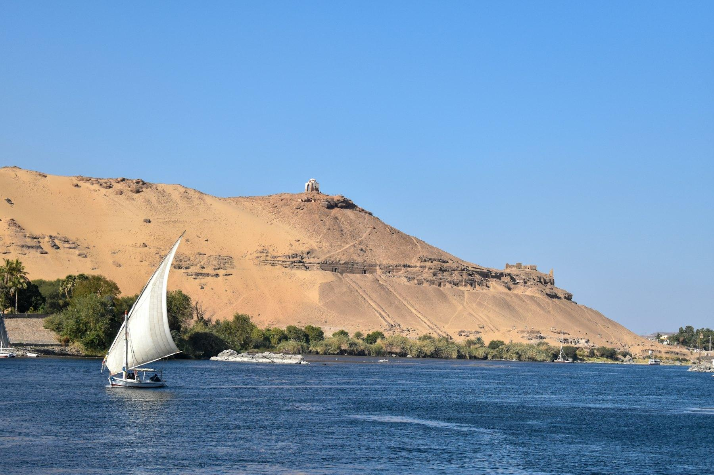
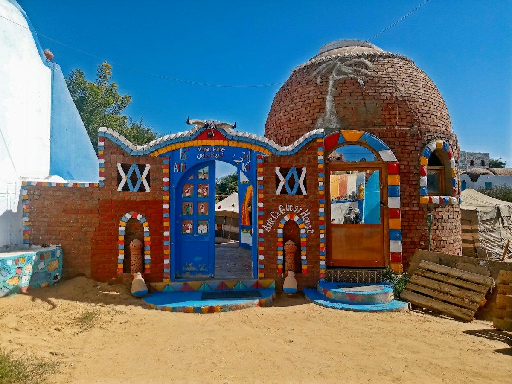

Che viaggiatore itinerante sei?
Sono sei domande, ti basta un minuto e non esistono risposte sbagliate: alla fine ti diciamo che viaggiatore sei e quale ritiro fa per te.
È venerdì sera. Tu sei...
Cosa ti manca di più in questo periodo?
Una notte in tenda, senza doccia:
In viaggio non dimentichi mai...
Il tuo rapporto con la meditazione:
Dal viaggio vorresti tornare con...
Il tuo profilo è pronto!
Lasciaci nome ed email: ti mandiamo il tuo profilo di Viaggiatore Itinerante e qualche consiglio per il viaggio giusto per te.

L'Esploratore
Hai bisogno di spazio, fatica buona e cieli enormi. Il silenzio lo trovi camminando, e le pratiche ti arrivano meglio dopo una giornata sulle dune.

Il Contemplativo
Ti ricarichi rallentando. Ti serve un ritmo lento, comodità la sera e tanto tempo per ascoltarti, mentre il paesaggio scorre da solo.
Il Cercatore
Sei curioso di tutto, fuori e dentro di te. Ti piacciono le storie dei posti, le persone che ci vivono e le domande che restano anche dopo.

Il Primo Passo
Vorresti prenderti del tempo da anni, ma una settimana lontano ti sembra tanto. Va benissimo così, e per iniziare ti consigliamo il viaggio più dolce che abbiamo, sul Nilo, dove la sera c'è sempre un letto comodo.